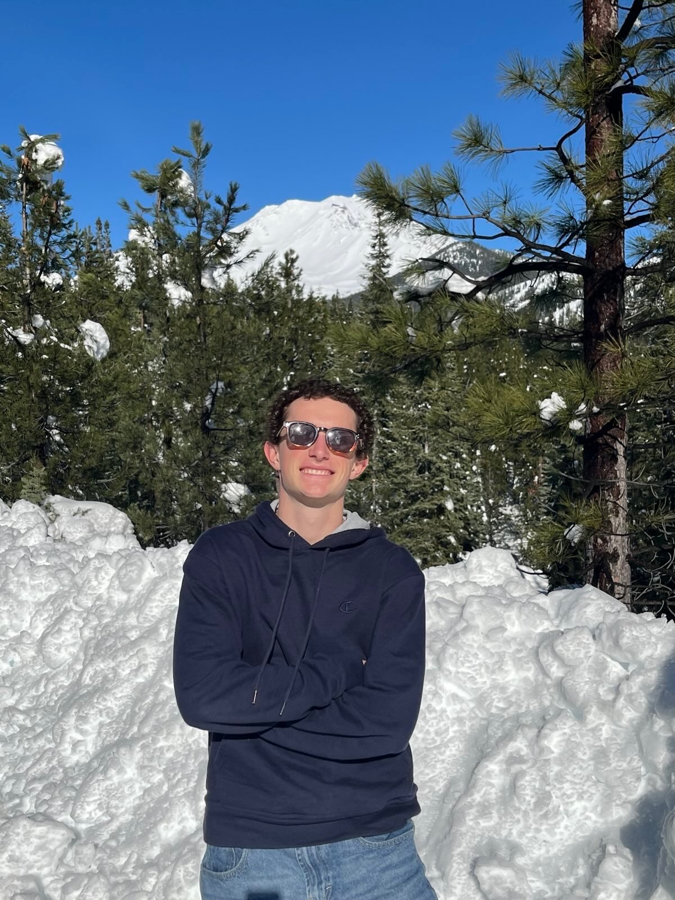

Projects
-
A UC San Diego Scheduling, Graduation Planning, and Student Life application. Organically grew to 250+ users and 5,000 weekly page views. Built with Vue, Supabase, Vercel, Docker
-
Clean Roommates tracks your roommates dirty dishes and sends notifications if there are any unclean dishes left in the sink. Attached to a raspberry pi 3 an ultrasonic sensor detects the dishes and triggers a camera to take photos. Then an objection detection model (yolov5 + fine-tuning) identifies each dish put into the sink. The images of the dishes are vector embedded and compared against stored vector embeddings of the dishes. Once the owner is matched automated notifications are pushed until the dishes are removed from the sink.
-
A 3-level browser platformer I made for Valentine's Day, with character select, sprite animation, platforms, spikes, lava, and scene transitions. I learned Phaser, arcade physics, collisions, the game loop, and how to wire keyboard controls, audio, and multiple scenes in a browser game.
-
A published PyPI package for the Alpha Vantage API with 7.2k+ downloads. Configuration-driven Python client covering stocks, forex, crypto, commodities, economic indicators, technical indicators, and news sentiment, with type hints, endpoint discovery, and intelligent defaults. pip install alpha-vantage-client
-
A real-time command line trading application in C++ using jsoncpp and curl.
-
My second website for the weather. There is no AI involved. I learned how to properly design using Figma, utilize APIs (Nasa, Supabase), connect Auth, DBs, and build using Next.js
-
My high school senior capstone website — the first site I built.
Contact
Hey, I'm Judah

- Education: 3rd year @ UCSD
- Interests: Database Systems, ML/AI, WebDev
- Hobbies: Soccer, Rock Climbing, Eating, Music, Surfing, Building Stuff
- Email: judahworkflow@gmail.com
- Github: judah_fuego
How I arrived at Computer Science?
I was introduced to the world of computers by a friend my senior year of high school. He was a tech youtuber and showed me how to install my first Linux Distro (MintOS) on my destroyed Acer Aspire. Then that same year I built a simple react website for a senior capstone project. Even though the website had a terrible UI and tabs that didn't work my fellow classmates were in awe and had a good laugh at the gallery of photos and videos I had included on the website. The enjoyment I got from building that first website and the joy created encouraged me to keep building. Going into my first year at community college I took a leap and attended Hackathons at SMU, Princeton, Santa Barbra, and UCSD, got an internship and kept building for fun.
Project Highlights
-
A UC San Diego Scheduling, Graduation Planning, and Student Life application. Organically grew to 250+ users and 5,000 weekly page views. Built with Vue, Supabase, Vercel, Docker
-
Clean Roommates tracks your roommates dirty dishes and sends notifications if there are any unclean dishes left in the sink. Attached to a raspberry pi 3 an ultrasonic sensor detects the dishes and triggers a camera to take photos. Then an objection detection model (yolov5 + fine-tuning) identifies each dish put into the sink. The images of the dishes are vector embedded and compared against stored vector embeddings of the dishes. Once the owner is matched automated notifications are pushed until the dishes are removed from the sink.
-
My second website for the weather. There is no AI involved. I learned how to properly design using Figma, utilize APIs (Nasa, Supabase), connect Auth, DBs, and build using Next.js